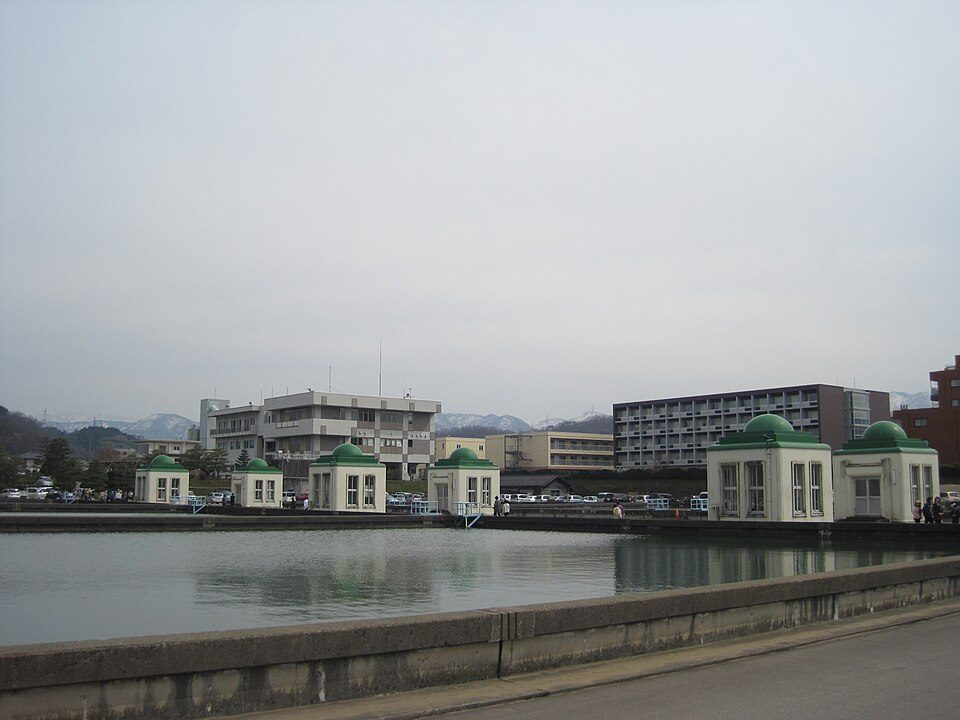

日本の水道水の安全性：水質基準と検査のしくみ、家庭で気をつけること
要点まとめ
「日本の水道水はそのまま飲める」とよく言われます。この記事では、それを言い切るのではなく、水道水がどんな基準で、どれくらいの頻度で検査され、だれが管理しているのかを、水道法などの法令と、環境省・国土交通省・水道事業者の資料でまとめました。受水槽のように、建物の側で管理する設備もあります[5]。家庭で気をつけることも、数字とともに紹介します。

水道水を守る法律と国の担当
水道法が、水道水の「要件」を決めている
具体的な項目と基準値は、省令の52項目で決まる
水道法第4条は、水道で供給される水が備えるべき要件として、病原生物に汚染されていないこと、シアン・水銀などの有毒物質を含まないこと、異常な酸性・アルカリ性を示さないこと、異常な臭味がないこと（消毒による臭味は除く）などを挙げています[1]。具体的な項目と基準値は、2003年5月に定められた「水質基準に関する省令」で決まっていて、水道水はこの基準に適合しなければなりません[8][9]。
移管 国の担当は、国土交通省と環境省に
水質と衛生は環境省、それ以外の整備・管理は国土交通省
厚生労働省の案内では、2024年4月1日から、水質基準の策定と、水道の整備・管理のうち水質・衛生に関することは環境省、それ以外の整備・管理は国土交通省の担当になりました[11]。国土交通省には同じ日に「水道事業課」などが新設されています[12]。
水質基準52項目と「3つの区分」
国は、水道水の水質の項目を3つに分けて管理しています[8][2]。
| 区分 | 項目数 | 位置づけ |
|---|---|---|
| 水質基準 | 52項目（2026年4月1日施行） | 水道水が適合しなければならない基準。水道事業者などに検査の義務がある[2][8] |
| 水質管理目標設定項目 | 26項目（2026年4月1日適用） | 水道水中で検出の可能性があるなど、水質管理上留意すべき項目[2] |
| 要検討項目 | 46項目（2025年6月30日適用） | 毒性の評価が定まらない、浄水中の存在量が分からないなどの理由で、上の2つに分類できない項目[2] |
| 項目 | 基準値 |
|---|---|
| 一般細菌 | 1mLの検水で形成される集落数が100以下 |
| 大腸菌 | 検出されないこと |
| 鉛及びその化合物 | 鉛の量で0.01mg/L以下 |
| ヒ素及びその化合物 | ヒ素の量で0.01mg/L以下 |
| 硝酸態窒素及び亜硝酸態窒素 | 10mg/L以下 |
| 総トリハロメタン | 0.1mg/L以下 |
| PFOS及びPFOA | 0.00005mg/L（50ng/L）以下 |
| カルシウム、マグネシウム等（硬度） | 300mg/L以下 |
| pH値 | 5.8以上8.6以下 |
| 味・臭気 | 異常でないこと |
| 色度 | 5度以下 |
| 濁度 | 2度以下 |
出典: 環境省の水質基準の一覧[2]と、水質基準に関する省令[9]。PFOS及びPFOAは2つの合計の値です[3]。1ng（ナノグラム）は1mgの100万分の1です[13]。1mg/Lは、家庭の浴槽（約200L）に0.2gの物質が含まれているときの濃さです（東京都水道局の説明）[10]。
基準は、2003年の50項目から見直しが続く
新しい知見に合わせて、項目の追加や強化をしている
環境省によると、今の水質基準は2003年に大幅に改正されて制定され、そのときは50項目でした[8]。その後も、常に最新の科学的知見に照らして改正していくという考え方で、見直しが続いています[8]。
残留塩素は、蛇口で「0.1mg/L以上」が義務
下限は省令で、上限は目標値で決まっている
水道法施行規則は、蛇口（給水栓）の水が遊離残留塩素を0.1mg/L以上（結合残留塩素の場合は0.4mg/L以上）保つように、塩素で消毒することを求めています[4]。一方で、塩素が多いとカルキ臭が出るため、水質管理目標設定項目として1mg/L以下という目標値があります[2][14]。
トリハロメタンは、消毒の塩素からできる
水中の有機物と塩素が反応してできる
東京都水道局は、川の水に含まれる有機物質や、落ち葉などが分解してできた物質と、浄水処理の塩素が反応してトリハロメタンができると説明しています[14]。水質基準は、生涯にわたって摂取しても健康に影響が生じない水準で設定されているとしています[14]。
硬度は、健康よりも使いやすさと味の目安
基準は300mg/L以下、目標は10〜100mg/L
硬度は、水に含まれるカルシウムとマグネシウムの量を表す値です[15]。東京都水道局は、水質基準の300mg/L以下は、値が高いと石けんの泡立ちが悪くなるなどの理由で、目標値の10〜100mg/Lはおいしさの面から決められていると説明しています[15]。WHOの飲料水水質ガイドラインは、硬度について健康に基づく指針値を設けていません[16]。
検査の頻度と、結果の公表
水道法は、水道事業者に定期と臨時の水質検査を義務づけています[1]。定期の検査の頻度は、水道法施行規則で項目ごとに決まっています[4]。
| 頻度 | 主な項目 |
|---|---|
| 1日1回以上 | 色、濁り、消毒の残留効果[4] |
| おおむね月1回以上 | 一般細菌、大腸菌、塩化物イオン、有機物（TOC）、pH値、味、臭気、色度、濁度[4][9] |
| おおむね月1回以上（原因の藻類が少ない期間を除く） | かび臭の物質（ジェオスミン、2-メチルイソボルネオール）[4][9] |
| おおむね3か月に1回以上 | 重金属、消毒でできる物質、PFOS・PFOAなど、そのほかの項目[4][3] |
| 年1回・3年に1回以上まで減らせる場合 | 一部の項目で、過去3年の結果がすべて基準値の5分の1以下なら年1回、10分の1以下なら3年に1回以上にできる[4] |
検査する水は、原則として蛇口（給水栓）で採ります[4]。塩化物イオンや味・臭気などは、連続して計測・記録している場合は、おおむね3か月に1回以上にできます[4]。
検査の計画と結果は、毎年公表される
水道事業者が、利用者が入手しやすい方法で知らせる
水道事業者は、水質検査の結果などの情報を、水道の利用者に提供しなければなりません[1]。水質検査計画は毎事業年度の開始前に、検査の結果などは毎年1回以上、利用者が入手しやすい方法で知らせることになっています[4]。東京都水道局は、検査結果をホームページで公表し、「水質年報」にもまとめています[10]。
浄水場で水がきれいになるまで
ふつうの流れは「凝集沈殿→ろ過→消毒」
塩素は、蛇口までの消毒を確保するために入れる
東京都水道局は、通常の浄水処理を「凝集沈殿→ろ過→消毒」と説明しています[10]。大阪市水道局の説明では、淀川から取り入れた水からごみや砂を取り除いたあと、「硫酸ばんど」という薬品を入れて細かい混ざりものを沈め、砂の層でこし、最後に塩素を入れて蛇口までの消毒を確保します[18]。
高度浄水処理：オゾンと活性炭を加える
かび臭やトリハロメタンのもとになる物質を減らす
高度浄水処理は、通常の処理では十分に対応できない、かび臭の原因物質、トリハロメタンのもとになる物質、カルキ臭のもとになるアンモニア態窒素などを処理するためのものです[10]。東京都は1989年に金町浄水場で整備を始め、2013年10月に利根川水系の浄水場で高度浄水100%を達成しました[19]。大阪市は、高度浄水処理をした水を市内全域に給水しています[20]。
国の基準より厳しい「おいしさ」の目標を置く例も
東京都は、カルキ臭やかび臭などに独自の目標値を置く
| 項目 | 国の基準など | 東京都の目標 |
|---|---|---|
| 残留塩素 | 1.0mg/L以下 | 0.1以上0.4mg/L以下 |
| かび臭の物質（2-MIB・ジェオスミン） | 各10ng/L以下 | 各3ng/L未満 |
| 臭気強度 | 3以下 | 1未満 |
| 有機物（TOC） | 3mg/L以下 | 1mg/L以下 |
| 色度 | 5度以下 | 1度以下 |
| 濁度 | 2度以下 | 0.1度以下 |
出典: 東京都水道局[13]。2025年度の達成率は、残留塩素が86.2%（前年度より0.4ポイント低下）で、ほかの項目は100%でした[13]。同局は、一部の給水所で塩素を追加で入れられない期間があり、浄水場に近い地域で残留塩素が高くなったことを、達成率が下がった理由に挙げています[13]。
PFOS・PFOAの新しい基準
2026年4月から PFOS・PFOAが水質基準に
基準値は2つの合計で50ng/L以下
PFOSとPFOAは、有機フッ素化合物（PFAS）の一種です[14]。環境省は2025年6月30日に省令を公布し、2026年4月から、水道事業者などにPFOS・PFOAの水質検査と基準を守る義務が新たに課されました[3]。基準値は、それまでの暫定目標値と同じ合算50ng/L（0.00005mg/L）です[3][14]。
- 2020年4月
水質管理目標設定項目に追加（暫定目標値は合算50ng/L）
- 2024年11月
国土交通省と環境省が、全国調査の結果（水道事業など）を公表
- 2025年6月30日
水質基準に加える省令を公布
- 2025年12月25日
フォローアップ調査の結果を公表
- 2026年3月27日
基準を超えたときの対応マニュアルを公表
- 2026年4月1日
水質基準として施行。検査と基準の順守が義務に
見方: 検査をした事業は2020年度の466から、2024年度（9月30日時点）の1,745に増えました[23]。2023年度までに暫定目標値を超えた14事業は、最新の検査ではすべて暫定目標値を下回っていました[21]。
2020年4月〜2025年8月に超えたのは19事業
18事業は対策済み、1事業は応急的な対応中
2025年12月25日に公表されたフォローアップ調査では、2020年4月から2025年8月末までに検査をしたことがある水道事業などは3,201事業で、このうち暫定目標値を超えたのは19事業でした（前回の調査では14事業）[24]。最新の結果では、18事業が対策を終えて暫定目標値を下回り、残る1事業は応急的な対応をしていて、年度内に対策を行う予定とされています[24]。
家庭で気をつけること
東京都水道局は、配水管から分かれたところから蛇口までの設備は利用者の財産で、受水槽とそれ以降の管理は、水質も含めて設置者（所有者や管理組合など）が行うと説明しています[5]。国土交通省の資料も、給水管を個人の所有物としています[25]。
| チェックすること | 目安・ポイント |
|---|---|
| 建物に受水槽があるか | 有効容量が10m³を超えると、設置者に年1回以上の清掃と検査の義務[26][4]。管理しているのは所有者や管理組合など[5] |
| 古い建物で、鉛製給水管が残っていないか | 鉛製給水管は1980年代後半まで全国で使われた[6]。西宮市は、建て替えや増改築のときに給水管の取り替えを呼びかけている[27] |
| 朝一番や旅行のあと | 西宮市は、鉛管の可能性がある建物では、使い始めのバケツ1杯程度（約10L）を飲み水以外に使うよう案内している[27] |
| くみ置きの水 | 蛇口から直接、口元までいっぱいに。常温で3日程度、冷蔵庫で10日程度[7] |
| 災害に備えた水 | 1人1日3Lを目安に、3日分程度（東京都水道局）[7] |
| 浄水器・沸かした水 | 塩素が減って雑菌が増えやすいので、早めに飲み切る[14] |
| 薬で色が変わる「実験」 | 塩素と反応しているだけで、水道水が危険だという意味ではない[14] |
受水槽：10m³を超えると、年1回の清掃と検査が義務
管理は、所有者や管理組合などの設置者が行う
受水槽は、配水管の圧力だけでは水が届かない建物の高い階に給水するため、水道の水をいったん受ける水槽です[5]。水槽の有効容量の合計が10m³を超えるものは「簡易専用水道」になり[26][1]、設置者は水槽の掃除を毎年1回以上行い、点検などをするほか、毎年1回以上、地方公共団体の機関か国の登録を受けた機関の検査を受けなければなりません[1][4]。
鉛製給水管：全国に約192万件が残る
1980年代後半まで、全国で使われていた
国土交通省は、鉛製給水管について、鉛にさらされることによる健康への影響や漏水の問題から、水質基準の強化や取り替えが進められてきたとしています[6]。それでも、2023年度末で道路の部分と敷地の部分を合わせて約192万件が残り、減るペースは鈍っています[6]。
朝一番の水：バケツ1杯を飲み水以外に（西宮市の案内）
鉛管の可能性がある家で、長く水を使わなかったとき
西宮市上下水道局は、鉛管が使われている可能性がある建物について、朝一番や、日中留守にした日の夕方、旅行などで長く水道を使わなかったときは、水道水の鉛の濃度が高くなったり、消毒の塩素が少なくなったりすることがあるとしています[27]。そのため、使い始めのバケツ1杯程度（約10L）の水を、トイレや洗濯など飲み水以外に使うよう案内しています[27]。同市は、これまでの調査では、通常の使い方なら塩素は適量で、鉛の濃度も水質基準値以下だとしています[27]。
くみ置き：常温3日、冷蔵庫10日程度
蛇口から直接、容器の口元までいっぱいに入れる
東京都水道局は、くみ置きの水は、清潔でふたのできる容器に、空気になるべく触れないよう口元までいっぱいに入れるよう勧めています[7]。浄水器を通したり沸かしたりすると消毒の塩素が除かれるため、蛇口から直接注ぎ、沸かさずに保存します[7]。塩素の消毒効果は、直射日光を避けて常温で保存すれば3日程度、冷蔵庫なら10日程度続くとしています[7]。
浄水器や煮沸のあとは、塩素が減る
雑菌が増えやすくなるので、早めに飲み切る
東京都水道局は、トリハロメタンは5分程度の煮沸や浄水器で大部分を取り除けるものの、残留塩素も減って雑菌が増えやすくなるため、早めに飲み切るよう呼びかけています[14]。浄水器の中にたまった水も、残留塩素がなくなって雑菌が増えやすくなることがあるとしています[14]。
普及率・水道管の老朽化・ほかの国
見方: 2024年度（2025年3月31日現在）の水道普及率は98.3%で、総人口約1億2,361万人のうち、約1億2,150万人が水道の給水を受けています[30]。2023年度は98.2%でした[30]。
40年を超えた水道管が、全体の4分の1に
2023年度の管路経年化率は25.3%
水道管の法定耐用年数は40年です。国土交通省の資料では、40年を超えた上水道管路の割合（管路経年化率）は年々上がり、2023年度は25.3%でした[31]。国土技術政策総合研究所によると、2023年度の水道管路の総延長は約75万kmで、そのうち約19万kmが40年を超えています[32]。
「そのまま飲める国は9か国」という図の読み方
外務省の情報と旅行ガイドのサイトをもとにした整理
国土交通省の「令和8年版 日本の水資源の現況」は、水道の水をそのまま飲める国を、日本、ニュージーランド、オーストリア、デンマーク、フィンランド、アイスランド、オランダ、ノルウェー、スウェーデンの9か国とし、そのまま飲めるが注意が必要な国を31か国としています[31]。
この「9か国」の根拠
この図は、2026年6月2日時点の外務省のウェブサイト「世界の医療事情」「海外安全情報」と、旅行ガイド「地球の歩き方」のホームページの情報をもとに、国土交通省水資源部が作ったものです[31]。各国の水道水の水質を測って比べた調査ではありません。
ミネラルウォーターは、別の法律の規格
水道水は水道法、ミネラルウォーターは食品衛生法
ミネラルウォーター類の規格は、食品衛生法にもとづく規格基準で決められています。2014年の改正で「殺菌・除菌有」と「殺菌・除菌無」に分けられ、それぞれに規格が設けられました[34]。消費者庁は、ミネラルウォーター類は水道水の代わりに飲まれている実態があるため、殺菌・除菌をするものは、水道水の水質基準がある項目を成分規格の項目にすることを検討する考え方だと説明しています[35]。
今回確認できなかった点
- 「日本の水道水は軟水が多い」とされることを裏づける、全国の硬度の公的な数値
- ミネラルウォーター類の成分規格の、現在の項目数（2014年の改正時点の数だけ確認した）
- 鉛製給水管の全国の延長（国土交通省の資料どうしで値が違うため、件数だけを書いた）
- 「朝一番の水」についての国の見解（自治体の案内だけを確認した）
- 日本水道協会の水質の説明（サイトに接続できなかった）
- 令和8年版「日本の水資源の現況」の公表日
出典（36件）
閲覧日はいずれも2026年11月10日〜11日
- 水道法（e-Gov法令検索）
- 水質基準項目と基準値（52項目）（環境省）
- 「水質基準に関する省令の一部を改正する省令」及び「水道法施行規則の一部を改正する省令」の公布等について（2025年6月30日）（環境省）
- 水道法施行規則（e-Gov法令検索）
- 貯水槽水道に関するQ&A（東京都水道局）
- 「鉛製給水管の布設替えに関する手引き」改定検討会の設置に係る背景及び目的について（2026年8月21日、PDF）（国土交通省 水道事業課）
- リーフレット「～震災への備え～ もしものときのために、知っておいてほしいこと」（2025年春、PDF）（東京都水道局）
- 水道水質基準について（改正経緯）（環境省）
- 水質基準に関する省令（e-Gov法令検索）
- よくある質問 水質＜水質基準・管理・検査等＞（東京都水道局）
- 水道対策（国土交通省・環境省への移管のお知らせ）（厚生労働省）
- 「国土交通省組織令の一部を改正する政令」等が公布されました（2024年3月29日）（国土交通省）
- おいしさに関する水質目標（東京都水道局）
- よくある質問 水質＜水道水の安全性・その他＞（東京都水道局）
- 水質に関するトピック「水の硬度」（東京都水道局）
- Guidelines for drinking-water quality, 4th edition incorporating the first, second and third addenda: Chapter 10 Acceptability aspects（PDF）（世界保健機関（WHO））
- 水道水の安全性（有機フッ素化合物について）（東京都水道局）
- 水道水ができるまで（大阪市水道局）
- 高度浄水処理について（東京都水道局）
- 高度浄水処理について（大阪市水道局）
- 水道におけるPFOS及びPFOAに関する調査の結果について（水道事業及び水道用水供給事業分、2024年11月29日）（国土交通省）
- 水道事業者等によるPFOS及びPFOA対応マニュアル（2026年3月27日）（国土交通省）
- 水道におけるPFOS及びPFOAに関する調査の結果について（最終取りまとめ、2024年12月24日、PDF）（国土交通省）
- 水道におけるPFOS及びPFOAに関するフォローアップ調査の結果について（2025年12月25日、別紙、PDF）（国土交通省・環境省）
- 鉛製給水管の解消に向けた取組について（2025年12月25日、PDF）（国土交通省 水道事業課）
- 水道法施行令（e-Gov法令検索）
- 朝一番の水は飲み水以外にお使いください（2014年4月1日更新）（西宮市上下水道局）
- 災害時に備えた食品ストックガイド（2019年3月、PDF）（農林水産省）
- 水道普及率の推移（令和6年度、PDF）（国土交通省）
- 令和6年度 現在給水人口と水道普及率（PDF）（国土交通省）
- 令和8年版 日本の水資源の現況（PDF）（国土交通省 水資源部）
- 老朽水道管路の点検、更新の効率化に関する検討（国総研レポート2026、PDF）（国土技術政策総合研究所）
- 国土交通白書2025 第4節5 水道の基盤強化（国土交通省）
- 通知「乳及び乳製品の成分規格等に関する省令及び食品、添加物等の規格基準の一部改正について」（2014年12月22日）（厚生労働省）
- 「ミネラルウォーター類のPFOS及びPFOAに係る規格基準」に関するQ&A（消費者庁）
- 通知「ミネラルウォーター類におけるPFAS（PFOS及びPFOA）の成分規格の設定に関する食品、添加物等の規格基準の一部改正について」（2025年6月30日、PDF）（消費者庁・厚生労働省）
写真・画像の出典（1件）
- 末浄水場の緩速ろ過池（福岡県。登録有形文化財）
写真: Hirorinmasa／Wikimedia Commons（CC BY-SA 3.0）